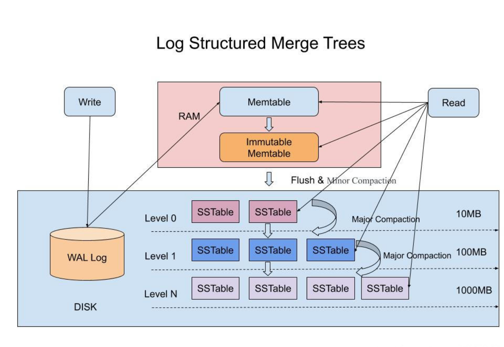
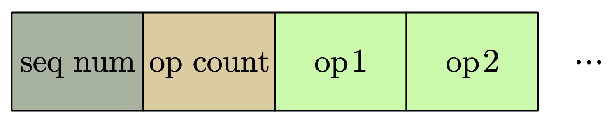

LevelDB 源代码阅读（一）：写流程
LevelDB 是一款基于 LSM 树的嵌入式高性能 NoSQL 数据库，由 Google 的两位 Fellow （Jeff Dean 和 Sanjay Ghemawat）设计开发。LevelDB 最初使用 C++ 开发，后面衍生出了不同语言版本，如 Go-LevelDB、 Java-LevelDB 等。本系列文章基于最新 C++ 版 LevelDB（1.23.0，截止 2021.7.8），对其结构设计进行分析，相关代码存放在我的 github 仓库。
LSM 树结构
LSM 树的英文全称为 Log-Structured-Merge-Tree，翻译过来就是结构日志合并树。但是 LSM 树并不是一种严格意义上的树型数据结构，而是一种数据存储机制。这种树的机制大致如图
当一个数据写入时，首先记录预写日志，然后将数据插入到内存中一个名为 MemTable 的数据结构中。当 MemTable 的大小到达阈值后，就会转换为 Immutable MemTable 。MemTable 和 Immutable MemTable 的内容大致相同，但是 Immutable MemTable 无法再发生写入。因此，在 MemTable 转换为 Immutable MemTable 的同时，也会开启一个新的 MemTable 供新数据写入。
Immutable MemTable 则在后台线程中经过压缩等程序后，被写入磁盘中，成为 SSTable 。一个 SSTable 往往就是一个数据文件。SSTable 是无法被修改的，但是有时用户会写入覆盖前面数据的新数据，例如在 KV 数据库中对一个原有的 Key 赋予一个新的值。所以，新老 SSTable 之间可能存在数据重叠。同时，因为 MemTable 的大小容易受到物理内存大小的限制，一般不会太大。因此，从数据库中直接 dump 出来的 SSTable 一般比较小，数目也比较多。过多的数据文件数量会导致数据库的查询性能下降，因此在文件落盘后，数据库还会对文件进行合并（Compaction）。合并即将小的 SSTable 合并为大的 SSTable，并且在合并的过程中还可能会进行数据去重、布局优化等操作。
LevelDB 中的 Level，代表的就是其后台使用的合并策略。如图所示，在 LevelDB 中，数据文件（即 SSTable）按照层级进行管理。从数据库中直接 dump 出的数据文件为第 0 层，多个 0 层文件进行合并以后得到了 1 层文件，多个 1 层文件合并后得到 2 层文件，以此类推。多个第 N - 1 层文件进行合并会得到一个第 N 层文件，文件所在的层数也代表了其中的数据被合并的次数。同时，随着文件层数的增加，文件的大小也一般会变得越来越大。
当然，合并的策略不止 Level Compaction 这一种，学术界提出了许多种合并策略，感兴趣的读者可以自行搜索阅读，本文就不再深入。
LevelDB 写入流程
LevelDB 没有设计成 C/S 模式，而是将数据库以库文件的形式提供给用户，运行时数据库需要和服务一起部署在同一台服务器上。我们简单地用下面这一段代码来说明 LevelDB 的写入过程：
1 | |
代码的第 13 行到 17 行启动了一个 LevelDB 实例，第 18 到 20 行试图从 LevelDB 中获取键 testkey1 所对应的值。当获取失败后，第 23 行则会向数据库中插入键 testkey1 及其对应的值 testvalue1 。25 行到 28 行则在插入完成后重新查询该键对应的值，29 行到 32 行删除该键对应的值，33 到 36 行则尝试在删除之后再次查询。现在我们考虑第 23 行插入的过程。
WriteBatch 编码规则
Debug 进入该函数，我们可以看到 Put 函数的内容
1 | |
首先，在进入这个函数之前，我们在 main 函数中以字符串形式存放的 key 和 value 被封装成了 Slice 对象。 Slice 类是一个简单的类，里面有存储了两个数据：以 char* 形式存储的 data 以及以 size_t 记录的 data 大小。这里在 key 对应的 Slice 里面，data 指向了 testkey1，size 则是 8；value 对应的 Slice 里 data 指向了 testvalue，size 则是 10 。
Put 函数的第一行声明了一个 WriteBatch 对象。LevelDB 对外提供了两种写入接口：Put 和 Delete 。在这两种操作中，数据库都会创建一个 WriteBatch 来执行对应的操作，一个 Batch 中的操作是原子的，其是数据库执行一次操作的最小单元。在 WriteBatch 中，所有的数据在被编码后存放在了一个名为 rep_ 的 string 中。rep_ 在初始化时会被 resize 成 12 字节大小。这 12 个字节的前 8 个字节（即 64 个 bit）存放了操作的 sequence number，后 4 个字节（32 个 bit)存放了该 Batch 中操作的数量。sequence number 本质上是一个计数器，每个操作都对应了一个 sequence number 。该计数器在 leveldb 内部维护，每进行一次操作就累加一次。由于在 leveldb 中，一次更新或者一次删除，采用的是 append 的方式，而非直接更新原数据。因此对同样一个 key，会有多个版本的数据记录，而最大的 sequence number 对应的数据记录就是最新的。
在 Put 函数的第二行，函数将写操作对应的 key 和 value 放入了 WriteBatch 中。我们跟着进入这个函数：
1 | |
可以看到，这个函数主要调用了四个函数做了四件事情：
- 第一行调用
SetCount函数，修改 rep_ 的第 9 到 12 个字节中所记录的操作数量，让它在原来的基础上加一。 - 第二行将此次操作的类型记录进 rep_ 中，kTypeValue 是一个 enum 类型的数据，其值为 0x1，代表插入。删除所对应的类型为 kTypeDeletion，其值为 0x0 。
- 第三行将 key 的数据编码进了 rep_ 中。
- 第四行将 value 的数据编码进了 rep_ 中。
在 PutLengthPrefixedSlice 中编码数据时，函数会先将数据的长度记录进 rep_ 中，再将数据的值记录到 rep_ 中。因此一个操作在 WriteBatch 中被编码为

而整个 WriteBatch 在 rep_ 中的编码为
合并写
回到 db_impl.cc 的 Put 函数中，其最后一个操作是将编码好的 WriteBatch 在数据库中写入。下面我们进入这个 Write 函数看一看。
1 | |
这一段代码大致可以分为几个部分：
- 第 8 到第 15 行获取锁，为写入获取权限。
- 第 18 行会检查当前活动的 MemTable 是否有足够的空间供写入，以及 Level-0 的文件是否需要进行合并。如果这些检查不通过，则会在后台进行一系列的操作，使得内存中有一个合适的 MemTable 供此次写入操作执行。
- 第 19 行到 53 行会进行包括 WAL 和实际数据的写入。第 41 行调用的
WriteBatchInternal::InsertInto函数将数据插入到了 MemTable 中。 - 第 56 到 70 行将 writer 从 Writer 队列中清除。
在这个函数中，LevelDB 对多个并发写进行了优化，它会将同一时间内的“小写入”合并为一个“大写入”来执行，减少日志文件的小写入次数，增加整体的写入性能。假设同时有 6 个写入请求并发产生：w1，w2，w3，w4，w5，w6 。
【w1 的执行】 第 8 到第 15 行代码使得 w1 拿到了写锁，进入了 Writer 队列。此时队列中只有一个 w1 ，因此顺利地进行了 BuildBatchGroup 。到第 31 行时，w1 会释放锁。但是此时由于 w2 到 w6 并不在队列的头部，因此其一直被阻塞，不会影响 w1 的写入。当 w1 完成写入后，在 56 到 70 行中将自己清除出 Writer 队列，然后返回。
【剩余请求的执行】 假设此时 Writer 队列中的顺序为：w3，w5，w2，w4，w6 ，那么 w3 就进入 BuildBatchGroup ，在这一函数中 w3 会遍历 Writer 队列，在 WriteBatch 的总大小不超过一定限制的情况下，将尽可能多的写请求合并到自身的 WriteBatch ，合并的过程使用的就是前面所描述的 WriteBatch 的编码规则来进行的。假设这里 w3 将除了 w6 的所有请求都合并了，last_writer 会被置为 w4 。在 56 到 65 行，w3 会将 w5、w2、w4 都唤醒，将它们和自身一起清除出 Writer 队列，最后唤醒位于队首的 w6 。w6 会和 w1 一样执行下去，而 w5、w2、w4 则会在 13 到 15 行直接返回。
MemTable 插入
在前文中，我们忽略了位于 WriteBatchInternal::InsertInto 的插入过程。本节我们来看一看数据是如何插入 MemTable 中的。
1 | |
函数中会新建一个 MemTableInserter，设置好对应的参数后由 WriteBatch 的 Iterate 方法来执行对 MemTable 的插入。
在 Iterate 方法中，首先会将 WriteBatch 自身的 rep_ 包装为一个 Slice 。前面我们解释 Slice 结构时提到过，Slice 中只有一个以 char* 记录的数据内容和以 size_t 记录的数据大小。随后，系统将 rep_ 的数据头剪切掉，只剩下操作记录的部分。随后不断获取操作记录，如果是插入（Put），则获取其 key 和 value；如果是删除（Delete），则只需要获取其 key 。获取到记录后将其通过 Handler（即前面的 MemTableInserter）插入到 MemTable 中，并记录操作记录的数目。最后检查从 rep_ 中读出的操作数记录的数目是否与 rep_ 中记录的相同。
说到这里，还是没有讲到如何在 MemTable 中插入数据。以插入数据为例，MemTableInserter 的插入函数会调用 MemTable 的 Add 函数，该函数的细节如下：
1 | |
在这个函数中，原本的 key 被重新编码为 internal_key，然后重新和 value 编码到 buffer 中。internal_key 在 key_len 和 key_data 的后面追加了 7 个字节的 seqence number 和一个字节的 operation type 。
编码完成后，这个 buffer 会被插入到一个名为 SkipList 的数据结构中。SkipList 是 MemTable 内部用以存放数据的数据结构，其结构比较复杂，本文就不展开讲了，后面的文章会介绍这个 MemTable 的结构和实现。
至此，LevelDB 的写流程就介绍结束了。LevelDB 写流程主要有两个点值得我们注意：
- 不同操作（写入、删除）在内存中的编码方式
- 对并发写的合并
前者在用尽量少的空间优雅地编码了一个或多个操作记录，后者则巧妙地将多个并发写合并为了一个原子写，这两点非常值得我们反复品味。